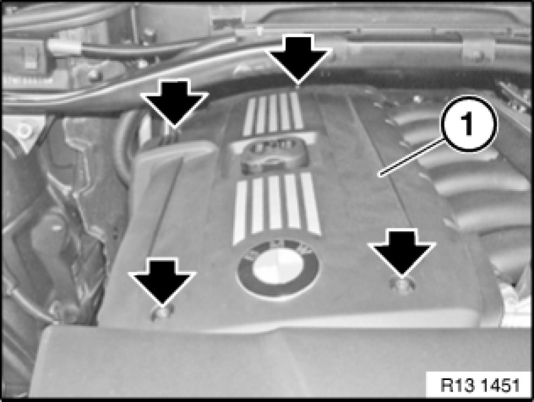

Operation CHARM
: Car repair manuals for everyone.
Home
>>
BMW
>>
2007
>>
X3 3.0si (E83) L6-3.0L (N52K)
>>
Repair and Diagnosis
>>
Engine, Cooling and Exhaust
>>
Engine
>>
Service and Repair
>>
Removal and Replacement
>>
Removing and Installing/Replacing Ignition Coil Cover
Removing and Installing/Replacing Ignition Coil Cover
11 00 - Removing and installing/replacing ignition coil cover (N52K)

Release screws.
Tightening torque 11 12 6AZ
[1]
[2]
11 12 Cylinder Head with Cover
.
Remove ignition coil cover (1).